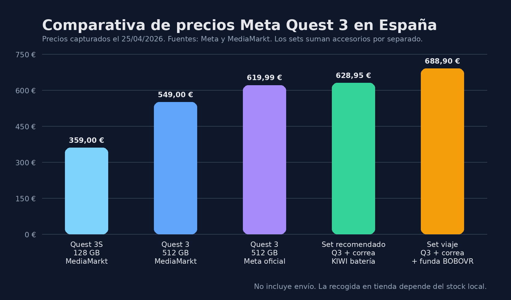

Dónde comprar Meta Quest 3 en 2026: comparativa de precios, edición recomendada y opciones cerca de Málaga o Córdoba
Si alguien quiere comprar unas Meta Quest 3 y quiere tomar una decisión con criterio, este post va directo al grano: precios confirmados, diferencia entre Quest 3 y Quest 3S, sets recomendados y opciones útiles para compra online o recogida cerca de Málaga y Córdoba.

Resumen ejecutivo
Si el objetivo es comprar la mejor edición posible, la recomendación no es la Quest 3S, sino la Meta Quest 3 de 512 GB. Es la opción más equilibrada para quien quiere una experiencia VR más completa, más margen de almacenamiento y una compra con mejor recorrido a medio plazo.
Además, en la revisión hecha hoy aparece una diferencia importante: MediaMarkt deja la Quest 3 512 GB por debajo del precio oficial de Meta. Eso cambia por completo el ranking de compra.
Qué se ha comparado
Para que la comparativa sea realmente útil, he separado la investigación en tres bloques:
- Precio confirmado en tiendas accesibles en España.
- Valor real de cada opción, no solo el importe más bajo.
- Posibilidad de compra o recogida cerca de Málaga y Córdoba.
También he añadido dos sets recomendados montados con accesorios visibles en MediaMarkt, porque es una compra que mucha gente acaba ampliando con correa y funda.
Comparativa rápida de precios
| Opción | Precio confirmado | Tipo de compra | Veredicto rápido |
|---|---|---|---|
| Meta Quest 3S 128 GB – MediaMarkt | 359,00 € | Online + posible recogida en tienda | La opción barata |
| Meta Quest 3 512 GB – MediaMarkt | 549,00 € | Online + posible recogida en tienda | La mejor compra verificada |
| Meta Quest 3 512 GB – Meta Store | 619,99 € | Online oficial | La más directa con fabricante |
| Set recomendado: Quest 3 512 + correa KIWI con batería | 628,95 € | Montado con productos sueltos | Mejor comodidad/autonomía |
| Set viaje: Quest 3 512 + correa KIWI + funda BOBOVR | 688,90 € | Montado con productos sueltos | Compra más completa |
Qué edición recomiendo realmente
1) Si buscas la mejor edición posible
La respuesta es clara: Meta Quest 3 de 512 GB.
- Es la gama superior real frente a Quest 3S.
- Da más margen para juegos grandes, experiencias MR y contenido multimedia.
- Evita ir demasiado justo de almacenamiento.
- En esta revisión queda 70,99 € por debajo del precio oficial de Meta si se compra en MediaMarkt.
Conclusión: si el presupuesto llega, la Quest 3 512 GB gana sin demasiado debate.
2) Si quieres gastar lo mínimo posible
La Meta Quest 3S 128 GB por 359 € tiene sentido como entrada económica, pero no debería presentarse como la recomendación principal si el artículo pretende orientar hacia la mejor compra posible.
Quest 3S no es la mejor edición; es la versión más económica de acceso.
Análisis de las vías de compra
MediaMarkt: la compra más equilibrada hoy
- Precio muy competitivo: 549 € para la Quest 3 512 GB.
- Permite entrega online y muestra opción de recogida en tienda según disponibilidad.
- Tiene accesorios compatibles en la misma compra.
- Es la vía más práctica para cerrar compra en España con una cadena conocida.
Mi lectura es sencilla: si alguien quiere comprar hoy con buena relación entre precio, confianza y facilidad de recogida, MediaMarkt debería ir primera en la comparativa.
Meta Store: la compra oficial más limpia
- Compra directa al fabricante.
- Es la referencia más oficial en catálogo y garantía.
- Buena opción si alguien prioriza compra oficial antes que ahorro.
El problema es el precio: 619,99 €. En la foto actual, queda claramente por detrás de MediaMarkt en relación precio/valor.
Los mejores sets recomendados
Set 1 — Mejor compra pura
Meta Quest 3 512 GB – 549 €. Ideal para quien quiere entrar bien en VR sin disparar el presupuesto con accesorios desde el minuto uno.
Set 2 — Mejor compra realista para uso frecuente
Meta Quest 3 512 GB + correa KIWI con batería – 628,95 €. Es el set que más sentido tiene si las gafas se van a usar bastante: mejora comodidad, reparte mejor el peso y añade autonomía.
Set 3 — Mejor compra completa
Meta Quest 3 512 GB + correa KIWI con batería + funda BOBOVR – 688,90 €. Buena opción para quien quiere resolver de una vez comodidad y transporte.
Opciones cerca de Málaga o Córdoba
La opción física más sólida que he podido verificar en esta revisión es MediaMarkt.
MediaMarkt Málaga
- Dirección: C/ Explanada de la estación, s/n, 29002 Málaga
- Modelo: compra online con posible recogida en tienda
- Ventaja: permite intentar reserva o recogida sin depender solo del envío
MediaMarkt Córdoba
- Dirección: C.C. Los Patios de Azahara, Ctra. Palma del Río, Km 4,5 s/n, 14005 Córdoba
- Modelo: compra online con posible recogida en tienda
- Ventaja: alternativa clara para compra local o semi-local
Recomendación práctica: antes de desplazarte, entra al producto exacto, revisa la opción de recogida en tienda y confirma stock real para Málaga o Córdoba.
Veredicto final
Si este post tuviera que cerrarse en una sola frase, sería esta:
La mejor compra verificada ahora mismo para unas Meta Quest 3 en España es la Meta Quest 3 de 512 GB en MediaMarkt por 549 €.
Y si hay que dejarlo en formato ultrarrápido:
- Mejor edición posible: Quest 3 512 GB
- Mejor precio confirmado: MediaMarkt
- Mejor vía oficial: Meta Store
- Mejor opción barata: Quest 3S 128 GB
- Mejor compra para uso serio: Quest 3 512 GB + correa con batería